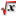

enlarge image
It's now time to analyze our ROIs. Before we can do that, another step is required: we have to specify to which channels the ROIs will be applied. Our image only contains one channel (wavelength 500), so we select it from the list box in the Analysis context panel within the ROI Definition Tool. Also we want to analyze both ROIs, so we select them both. We press the Analyze button  to compute the statistics. When the computation is finished, the ROI Results dialog will pop up:
|
| Fig 3-1: The ROI Results dialog. enlarge image |
|
|